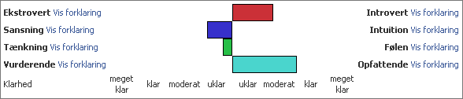
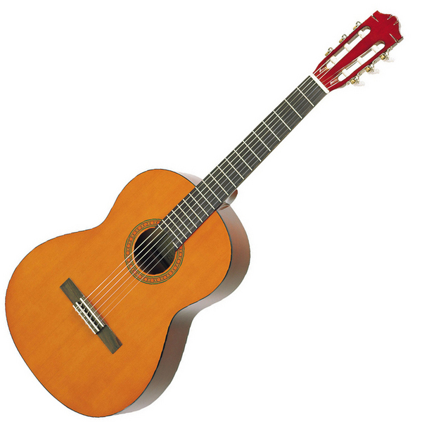
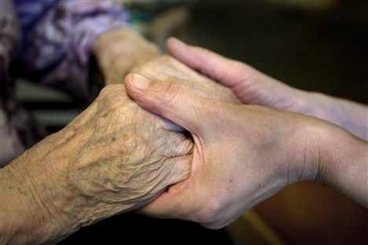
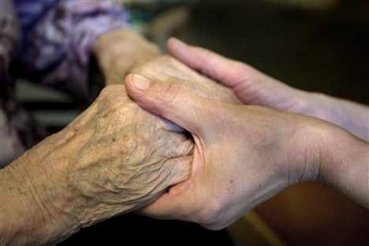

Hvem mig?
Disposition
- Først vil jeg gøre lidt i den slags "min type" ting, som HR-folk synes er sjove.
- Så kommer min forkortede livshistorie
- Og sidst mine kontaktoplysninger.
Min type
Intelligens
Jeg er ret intelligent.
Det har bestemt ikke været en hjælp for mig i min opvækst, jeg har derimod oplevet alle forbandelserne i forbindelse med det: Svært ved at finde venner; svært ved at gøre mig forståelig overfor kammerater; mobning, isolation og ensomhed.
Det har bestemt ikke været en hjælp for mig i min opvækst, jeg har derimod oplevet alle forbandelserne i forbindelse med det: Svært ved at finde venner; svært ved at gøre mig forståelig overfor kammerater; mobning, isolation og ensomhed.
Kreativitet
Jeg har svært ved at stoppe min hjerne, hvilket betyder, at den
(uafhængigt af hvad jeg ellers laver)
konstant kværner løs på mellem 1 og 1000 problemer samtidig.
Det giver tit problemer med at fokusere, men til gengæld; når fokus er der, så kan jeg lave nogle ret geniale ting - hvis jeg selv skal sige det. Ting, som andre slet ikke havde tænkt over, kunne lade sig gøre.
Det giver tit problemer med at fokusere, men til gengæld; når fokus er der, så kan jeg lave nogle ret geniale ting - hvis jeg selv skal sige det. Ting, som andre slet ikke havde tænkt over, kunne lade sig gøre.
JobIndex' typeprofil
Jeg har flere gange taget testen
"JobIndex Typetest" (på facebook).
Testen er baseret på det amerikanske Myers Brigg Type Indicator (MBTI) system, som igen er delvis baseret på Jungs personlighedsteorier.
Jeg er egentlig lidt loren ved den; Jeg synes nemlig, den er for rigid.
Men jeg tog den for at have noget at hæfte ved mine jobansøgninger. Den kan give et fingerpraj; men ligefrem at basere et indsatsområde eller en uddannelse på den er overdrevet.
Det her er score-skemaet fra sidste gang, jeg tog den (marts 2012):

Testen er baseret på det amerikanske Myers Brigg Type Indicator (MBTI) system, som igen er delvis baseret på Jungs personlighedsteorier.
Jeg er egentlig lidt loren ved den; Jeg synes nemlig, den er for rigid.
Men jeg tog den for at have noget at hæfte ved mine jobansøgninger. Den kan give et fingerpraj; men ligefrem at basere et indsatsområde eller en uddannelse på den er overdrevet.
Det her er score-skemaet fra sidste gang, jeg tog den (marts 2012):
Afkodning
-
Extrovert kontra
Introvert parret
(øverst).
Jeg er enig. Dog undrer det mig, at den ikke boner kraftigere ud til I-siden. -
Vurderende (dømmende)
kontra Opfattende parret
(nederst).
(Hvorfor er den nederst??
Den burde være andenøverst,
fordi den bestemmer,
hvordan de to sidste punkter
skal læses.)
Det er nok rigtigt. I hvert fald kan jeg godt lide at holde mange muligheder åbne så længe som muligt.
Det betyder så angiveligt også, at der skal lægges mere vægt på mit Sansning/Intuition par end på mit Tænkning/Følen par. -
Sansning kontra
Intuition parret
(andenøverst).
Pas. Jeg ved ikke om det er rigtigt; og udsvinget er heller ikke fantastisk overbevisende. Men det er åbenbart vigtigt; dét peger mit Vurderende/Opfattende par på... -
Tænkning kontra
Følen parret (tredieøverst).
Det skulle være det mindst vigtigste par. Her er udsvinget endnu svagere; og et par gange, hvor jeg har taget testen, har den været svuppet over til den anden side.
Det giver følgende to bud på min personlighedstype:
|
"Håndværker" ISTP: "Fokus på at finde den logiske måde at få tingene gjort på" ISTP-typer er ofte saglige, logiske og eftertænksomme personer, som holder af at gennemskue, hvordan tingene fungerer. Deres talent ligger i at kunne løse problematikker, der opstår pludseligt, og de går ikke af vejen for at arbejde længe på at få problemet løst. De er selvstændige, nysgerrige og praktisk orienterede, ofte begavet med teknisk snilde. |
"Kunstner" ISFP: "Fokus på at drage omsorg for andre mennesker" ISFP-typer er ofte stille, praktiske og følsomme personer, som tiltales af harmoni og æstetik. Deres talent ligger i at kunne kombinere, variere og improvisere. Da de som personer har et meget rigt og værdiladet indre følelsesliv, betyder det meget for dem, at de beskæftiger sig med noget, som er meningsfyldt og betydningsfuldt for dem. De har som personer ofte brug for løse strukturer, så de kan bruge deres evner til at vælge den rigtige handlemåde, som passer til den givne situation. |
Jeg tror egentlig, de begge rammer nogenlunde på, hvordan jeg er.
Og hvilken af de to, der passer bedst, kommer nok mest an på, hvilket humør jeg er i, den dag jeg tager testen.
Men sådan er det jo med horoskoper: Det meste passer på én, uanset hvad stjernetegn man er...
Men jeg kan dog skrive under på, at jeg ikke er en alphahan/ledertype (ENTJ), og det er nok ikke tilfældigt, at en af de typer, jeg bonner ud med, nemlig kunstneren (ISFP) præcis er dén types diamentrale modsætning.
Læringsstile
Læringsstile er endnu en ting, som jeg har rodet med
for at kunne lægge et eller andet ved mine ansøgninger
og gøre HR-folkene glade.
Jeg synes dog, der lugter endnu mere af humbug her, end der gør i MBTI-verdenen.
Der var fx en test, der påstod, at jeg ville lære godt ved at spille skuespil/rollespil. Men det bryder jeg mig overhovedet ikke om.
Der er ikke nogen ensartet standard på området, og det ikke er en eksakt videnskab. Derfor er kategorierne lidt mudrede, og det er svært at skelne entydigt mellem dem. Jeg synes også, at flere af kategorierne er for "brede", dvs at man blander ting sammen.
Kort sagt, så fatter jeg ikke helt modellen :) Det virker som om, man har lavet kasser bare for at lave kasser.
Men lad nu det ligge! Jeg har prøvet at putte mig selv i kasser:
Så alt i alt er jeg
en auditiv og auditiv-digital kinæstetiker;
som hverken kan eller vil danse.
Jeg synes dog, der lugter endnu mere af humbug her, end der gør i MBTI-verdenen.
Der var fx en test, der påstod, at jeg ville lære godt ved at spille skuespil/rollespil. Men det bryder jeg mig overhovedet ikke om.
Der er ikke nogen ensartet standard på området, og det ikke er en eksakt videnskab. Derfor er kategorierne lidt mudrede, og det er svært at skelne entydigt mellem dem. Jeg synes også, at flere af kategorierne er for "brede", dvs at man blander ting sammen.
Kort sagt, så fatter jeg ikke helt modellen :) Det virker som om, man har lavet kasser bare for at lave kasser.
Men lad nu det ligge! Jeg har prøvet at putte mig selv i kasser:
Visuel | ||
|
Med ét ord: Nej. Jeg bliver træt i hovedet og forvirret af PowerPoint shows; jeg oplever, at jeg har problemer med at se dét, som andre peger ud for mig; jeg kan ikke se ting for mig (visualisere); jeg kan fare vild alle steder (selv steder, jeg burde kende udenad); og malerier og kunst siger mig sjældent noget... med mindre jeg kan finde et eller andet mønster i det, altså ;-) Billederne her på siden er ikke sat ind for min skyld; jeg ville have haft det fint med ren tekst. Og skulle du synes, farverne ser underlige ud, så er det ganske givet rigtigt; mine øjne er ikke farveblinde, men min hjerne er vist nok! | ||
Auditiv | ||
|
Med ét ord: Ja. Jeg lever og ånder lyde. Selvom det ville være pokkers upraktisk, så ville jeg hellere undvære mit syn end musik. Alting kan starte min hjerne på en sang: Det kan være en sætning; en tilfældig lyd; en dør der knirker; en fugl, der gør at jeg fløjter en apropos-sang. Jeg har altid en sang spillende i hovedet; og jeg har en utrolig god hukommelse for musik. Jeg kan pludselig en dag komme i tanker om en melodi, jeg har hørt én gang som barn; jeg kan huske cirka hvor gammel, jeg var, og præcis hvilke omstændigheder der var ved oplevelsen. (Og takket være google/youtube kan jeg nu finde den frem og opdage, hvem der egentlig lavede den :-D ) Jeg nyder også at lytte til lydbøger; især engelske. Andre dage kan jeg ikke klare lyde overhovedet. Det lyder paradoksalt, men det hænger sammen med, at alle lyde går direkte ind i mit hovede, og hvis min koncentration er svækket, så kan jeg ikke håndtere det. Jeg kan også slå fuldstændig fra, bevidst eller ubevidst, når der er nogen, der læser noget op for mig eller forsøger at forklare mig noget. Særligt lyse kvindestemmer (lærere/forelæsere) har jeg det af en eller anden grund svært med. | ||
Kinæstetisk | ||
|
Med ét ord: Øh? Det er en alt for bred kategori, fordi den både omfatter krop, følelser og hænder. Krop: Jeg har et decideret kejtet forhold til min krop (sport? hvad er det?). Jeg kan ikke danse, og jeg kan ikke fordrage at skulle spille rollespil og skuespil. Følelser: Mavefornemmelser; hvordan tings overflade m.m. er - det kan jeg huske. Ved at se på andre, ved jeg, hvordan de har det; og jeg kan genkalde følelser, jeg havde for flere år siden. Hænder: Jeg skal helst skille ting ad / samle dem igen for at forstå dem. Jeg er "rørebarn" (pilfinger). Når jeg skal finde vej, er jeg nødt til at forestille mig vejenes indgreb i hinanden; hvor de mødes; hvordan de vrider sig, etc. (det kan være meget omfattende! derfor farer jeg som regel vild). | ||
Auditiv-digital | ||
|
Det her er en af de mest underligt navngivne
kategorier overhovedet, inden for,
ja.. alt! Bortset fra dét: Ja. Jeg er en grubler; og hvis noget optager mig, kan jeg gå med det i hovedet døgn, måneder eller år. Jeg elsker logik og nonsens. Jeg er vild med ord; deres betydning, historie og udtale. Hvis jeg har travlt og skal skrive noget, stiger LIX-tallet gevaldigt (så jeg forsøger altid at hive LIXene ud af mine tekster; jeg efterredigerer meget!) Jeg opsamler automatisk - og ganske uden at ville det - så meget ubrugelig paratviden, at jeg nogle gange bliver helt bekymret for, om der kan blive ved med at være plads. Jeg kan godt lære og huske ting ved bare at tænke ekstra grundigt over dem; men hvis jeg skal være sikker, så skal jeg sige dem højt (dvs jeg er mere auditiv). | ||
1972 - nu
Min opvækst og ungdom har været træls;
og det har rakt langt langt ind i mit voksne liv.
Nu er det nævnt.
Med mindre det har direkte indflydelse på fortællingen, vil jeg ellers tillade mig at forbigå det i tavshed.
Nu er det nævnt.
Med mindre det har direkte indflydelse på fortællingen, vil jeg ellers tillade mig at forbigå det i tavshed.
Barndom - fantasifuld nørd

Jeg har altid haft en livlig fantasi:
Som helt lille hed en af mine bamser
netop "Livlig Fantasi".
Jeg havde også to usynlige legekammerater,
som hed "Finn og Kinn".
Fra helt lille var jeg hooked på musik; noget af det første, jeg kan huske tydeligt fra min tidlige barndom, er oplevelser omkring musik.
Efter, jeg lærte at læse, var bibliotekets skønlitteraturafdeling min bedste ven.
På den anden side har jeg altid været en nørd: Nysgerrig, irriterende og gammelklog.
Jeg ping-pongede hellere med læreren, end jeg gad mine klassekammerater.
Det virkede derfor umiddelbart indlysende - for mig selv såvel som for andre - at jeg skulle studere noget mekanisk/naturvidenskabeligt. Noget som kunne forstås ud i alle kanter og detaljer.
Fra helt lille var jeg hooked på musik; noget af det første, jeg kan huske tydeligt fra min tidlige barndom, er oplevelser omkring musik.
Efter, jeg lærte at læse, var bibliotekets skønlitteraturafdeling min bedste ven.
På den anden side har jeg altid været en nørd: Nysgerrig, irriterende og gammelklog.
Jeg ping-pongede hellere med læreren, end jeg gad mine klassekammerater.
Det virkede derfor umiddelbart indlysende - for mig selv såvel som for andre - at jeg skulle studere noget mekanisk/naturvidenskabeligt. Noget som kunne forstås ud i alle kanter og detaljer.
Tidlig ungdom - uden retning
I første omgang gik jeg på matematisk gymnasium,
det gik nogenlunde - på trods af, at jeg stort set ikke lavede lektier.
Mit yndlingsfag på gym var kemi (på grund af min fantastiske kemilærer, Tom Sillesen!), så jeg troede, at jeg skulle læse datakemi på uni. Men efter at have studeret i cirka 20 dage (hvoraf jeg kun dukkede op til halvdelen af forelæsninger og et par af lab-timerne), begravede jeg mig i stedet i science fifiction og fantasy-bøger. Jeg plejer at sige, at jeg pløjede igennem alt af den type bøger, på Århus Hovedbib, i løbet af det semester, jeg "læste på uni".
Efterhånden drejede min litteratursmag sig over mod det mere eksistentialistiske: Arthur C. Clarke's senere værker, Michael Ende, Ursula K. LeGuinn, Doris Lessing, Inge Eriksen og Erwin Neutzsky-Wulff.
Jeg programmerede også flere "biblioteker" til optimeret håndtering af hardware under DOS i Turbo Pascal. Jeg fordybede mig i assembler og skrev erstatninger for device drivere; de fyldte kun en brøkdel af originalerne. Alt sammen for min egen fornøjelses skyld.
Jeg gik helst ikke udenfor en dør. Den gamle dame, jeg boede ved, syntes - med rette - at jeg var underlig.
Efter modstræbende at have indrømmet min situation for mine forældre, flyttede jeg væk fra Århus igen og havde nogle småjobs.
Så var jeg 8 måneder på Silkeborg Højskole, og det var en fantastisk oplevelse, og noget som jeg siden har trukket meget på - men lige dengang kunne jeg ikke helt relatere det til noget, det var ligesom for anderledes i forhold til dét, jeg havde forestillet mig om mit liv. Det blev nærmest en tænkepause.
Jeg startede på datamatiker (handelsskole) uden at have lært af mine fejltagelser, og lavede igen aldrig lektier. Jeg fløj igennem første semester, men måtte bruge tre forsøg på andet semester - blot for at droppe ud i starten af tredie.
Mit yndlingsfag på gym var kemi (på grund af min fantastiske kemilærer, Tom Sillesen!), så jeg troede, at jeg skulle læse datakemi på uni. Men efter at have studeret i cirka 20 dage (hvoraf jeg kun dukkede op til halvdelen af forelæsninger og et par af lab-timerne), begravede jeg mig i stedet i science fifiction og fantasy-bøger. Jeg plejer at sige, at jeg pløjede igennem alt af den type bøger, på Århus Hovedbib, i løbet af det semester, jeg "læste på uni".
Efterhånden drejede min litteratursmag sig over mod det mere eksistentialistiske: Arthur C. Clarke's senere værker, Michael Ende, Ursula K. LeGuinn, Doris Lessing, Inge Eriksen og Erwin Neutzsky-Wulff.
Jeg programmerede også flere "biblioteker" til optimeret håndtering af hardware under DOS i Turbo Pascal. Jeg fordybede mig i assembler og skrev erstatninger for device drivere; de fyldte kun en brøkdel af originalerne. Alt sammen for min egen fornøjelses skyld.
Jeg gik helst ikke udenfor en dør. Den gamle dame, jeg boede ved, syntes - med rette - at jeg var underlig.
Efter modstræbende at have indrømmet min situation for mine forældre, flyttede jeg væk fra Århus igen og havde nogle småjobs.
Så var jeg 8 måneder på Silkeborg Højskole, og det var en fantastisk oplevelse, og noget som jeg siden har trukket meget på - men lige dengang kunne jeg ikke helt relatere det til noget, det var ligesom for anderledes i forhold til dét, jeg havde forestillet mig om mit liv. Det blev nærmest en tænkepause.
Jeg startede på datamatiker (handelsskole) uden at have lært af mine fejltagelser, og lavede igen aldrig lektier. Jeg fløj igennem første semester, men måtte bruge tre forsøg på andet semester - blot for at droppe ud i starten af tredie.
Sen ungdom - nu med retning
En ven rådede mig til at starte på en mere håndværksagtig uddannelse på teknisk skole,
og via elektronikmekaniker havnede jeg (som en af de første) på datamekaniker.
Her følte jeg mig hjemme, fik gode karakterer, og følte min fremtid var afklaret.
Det var også i denne periode, jeg mødte min kone, og i det hele taget kørte tingene stort set på skinner for mig.
Efter de 5 års uddannelse blev jeg ansat i Procesdata afdelingen på Grundfos og nød det i fulde drag; jeg følte, at jeg hørte til. Denne følelse blev brat smadret, da jeg blev fyret efter 3 år, og jeg røg ned i kulkælderen.
Officielt var vi flere, der blev sagt op samtidig, på grund af besparelser. Uofficielt kunne min chef ikke lide mig (om omvendt), og jeg havde været så dum at være blandet ind i nogle projekter, der gav underskud. Desuden spurgte min værkfører mig på et tidspunkt, om jeg kunne overskue at overtage en af mine kollegers faste projekt, hvis han nu ikke var der mere (det var umiddelbart før, vi fik noget at vide om fyringerne). Og jeg svarede, at det troede jeg ikke, jeg kunne; for magen til rod, skulle man lede længe efter. Så viste jeg ham min mappe med det tilsvarende projekt; alle moduler beskrevet og sat op i forhold til hinanden. "Se; sådan skal det se ud!", sagde jeg. Så blev jeg sagt op.
Jeg hader at gå ledig. Jeg går fuldstændig i baglås over selvbebrejdelser og dage, der bare forsvinder.
Men efter nogle måneder så jeg et stillingsopslag, som i den grad tændte mig. Det drejede sig om et lille musikfirma i Hasselager, der skulle bruge en projektmedarbejder i 2 måneder. Det viste sig, at jeg swingede perfekt med deres chefprogrammør, og måske fordi jeg ikke krævede noget særligt i løn, fik jeg jobbet. Min ansættelse blev forlænget af flere omgange. Det var et fantastisk job! Og jeg nød det i fulde drag.
Uheldigvis gik det ikke i længden, vi fik aldrig overskud, min chef begyndte at tage tvivlsomme beslutninger, og til sidst trak pengemanden tæppet væk under os.
Det var også i denne periode, jeg mødte min kone, og i det hele taget kørte tingene stort set på skinner for mig.
Efter de 5 års uddannelse blev jeg ansat i Procesdata afdelingen på Grundfos og nød det i fulde drag; jeg følte, at jeg hørte til. Denne følelse blev brat smadret, da jeg blev fyret efter 3 år, og jeg røg ned i kulkælderen.
Officielt var vi flere, der blev sagt op samtidig, på grund af besparelser. Uofficielt kunne min chef ikke lide mig (om omvendt), og jeg havde været så dum at være blandet ind i nogle projekter, der gav underskud. Desuden spurgte min værkfører mig på et tidspunkt, om jeg kunne overskue at overtage en af mine kollegers faste projekt, hvis han nu ikke var der mere (det var umiddelbart før, vi fik noget at vide om fyringerne). Og jeg svarede, at det troede jeg ikke, jeg kunne; for magen til rod, skulle man lede længe efter. Så viste jeg ham min mappe med det tilsvarende projekt; alle moduler beskrevet og sat op i forhold til hinanden. "Se; sådan skal det se ud!", sagde jeg. Så blev jeg sagt op.
Jeg hader at gå ledig. Jeg går fuldstændig i baglås over selvbebrejdelser og dage, der bare forsvinder.
Men efter nogle måneder så jeg et stillingsopslag, som i den grad tændte mig. Det drejede sig om et lille musikfirma i Hasselager, der skulle bruge en projektmedarbejder i 2 måneder. Det viste sig, at jeg swingede perfekt med deres chefprogrammør, og måske fordi jeg ikke krævede noget særligt i løn, fik jeg jobbet. Min ansættelse blev forlænget af flere omgange. Det var et fantastisk job! Og jeg nød det i fulde drag.
Uheldigvis gik det ikke i længden, vi fik aldrig overskud, min chef begyndte at tage tvivlsomme beslutninger, og til sidst trak pengemanden tæppet væk under os.
Voksen - og følsom
Så stod jeg der igen med håret i postkassen.
Uheldigvis havde det sidste job efterladt mig i en arkitektonisk blindgyde, fordi musikfirmaet - for at kunne operere på både Mac og Windows platformen - baserede softwaren på rå C++ i stedet for C# og andre fancy nyskabelser.
Alle jobannoncer krævede erfaring indenfor C# og .NET - og det kunne jeg ikke få mig selv til at skrive, at jeg havde. Uanset, at jeg synes, at når man kan ét sprog (eller, i mit tilfælde, 10 sprog), så er nye sprog bare mere af det samme. Dét er svært at forklare til potentielle chefer og HR-konsulenter; de vil helst se papir på, at man kan tingene. Som om man kan bruge papirer til at programmere med; det har jeg aldrig forstået.
 Hvorom alt er: Efter at have gået arbejdsløs længe nok, skulle jeg sendes ud i noget; og jeg lod mig overtale af jobcenteret til at prøve 4 uger ved hjemmeplejen i Favrskov.
Allerede efter den første dag kunne jeg - til min overraskelse - slet ikke få armene ned igen af begejstring! Det var så fedt. At endelig lave noget meningsfyldt; særlig efter at jeg i min sidste ansættelse havde brændt så meget blod, sved og timer af på hovedløse projekter, der aldrig blev til noget.
Jeg snakkede med de ansatte om muligheden for at blive SOSU, og fik at vide, at lønnen var til at grine af. Det var så, hvad det var.
Men det store problem for mig var arbejdstiderne. Weekend-vagterne hos hjemmeplejen kunne jeg nok leve med; men det er næsten umuligt at blive kørende hjemmeplejer i dagtimerne, meget nemmere at få aftenruter - eller at komme ind på et plejehjem, hvor der er døgnbemanding.
Med tungt hjerte valgte jeg det fra.
Efter lang tid (og en hulens masse IT ansøgninger, som svarene blev mere og mere sporadiske på) kom jeg et par sommerferieuger ind som vikar i en SFO. Og igen: Armene i vejret! Det er så fedt at arbejde med mennesker, også de små af slagsen :) Jeg elskede de møgunger! Særlig de bøwlede.
Først blev jeg ansat indtil Jul, og siden forlænget to gange; men pga ansættelsesstop kunne jeg ikke få lov at blive efter juli 2012; øv.
Siden har min stress fra sidste IT-ansættelse desværre ramt mig hårdt i nakken, og jeg er stadig ikke i job.
Uheldigvis havde det sidste job efterladt mig i en arkitektonisk blindgyde, fordi musikfirmaet - for at kunne operere på både Mac og Windows platformen - baserede softwaren på rå C++ i stedet for C# og andre fancy nyskabelser.
Alle jobannoncer krævede erfaring indenfor C# og .NET - og det kunne jeg ikke få mig selv til at skrive, at jeg havde. Uanset, at jeg synes, at når man kan ét sprog (eller, i mit tilfælde, 10 sprog), så er nye sprog bare mere af det samme. Dét er svært at forklare til potentielle chefer og HR-konsulenter; de vil helst se papir på, at man kan tingene. Som om man kan bruge papirer til at programmere med; det har jeg aldrig forstået.
 Hvorom alt er: Efter at have gået arbejdsløs længe nok, skulle jeg sendes ud i noget; og jeg lod mig overtale af jobcenteret til at prøve 4 uger ved hjemmeplejen i Favrskov.
Allerede efter den første dag kunne jeg - til min overraskelse - slet ikke få armene ned igen af begejstring! Det var så fedt. At endelig lave noget meningsfyldt; særlig efter at jeg i min sidste ansættelse havde brændt så meget blod, sved og timer af på hovedløse projekter, der aldrig blev til noget.
Jeg snakkede med de ansatte om muligheden for at blive SOSU, og fik at vide, at lønnen var til at grine af. Det var så, hvad det var.
Men det store problem for mig var arbejdstiderne. Weekend-vagterne hos hjemmeplejen kunne jeg nok leve med; men det er næsten umuligt at blive kørende hjemmeplejer i dagtimerne, meget nemmere at få aftenruter - eller at komme ind på et plejehjem, hvor der er døgnbemanding.
Med tungt hjerte valgte jeg det fra.
Efter lang tid (og en hulens masse IT ansøgninger, som svarene blev mere og mere sporadiske på) kom jeg et par sommerferieuger ind som vikar i en SFO. Og igen: Armene i vejret! Det er så fedt at arbejde med mennesker, også de små af slagsen :) Jeg elskede de møgunger! Særlig de bøwlede.
Først blev jeg ansat indtil Jul, og siden forlænget to gange; men pga ansættelsesstop kunne jeg ikke få lov at blive efter juli 2012; øv.
Siden har min stress fra sidste IT-ansættelse desværre ramt mig hårdt i nakken, og jeg er stadig ikke i job.
Kontakt mig
Primært
Find mig på facebook:
https://facebook.com/lassesb
facebook
Og; ja - det er alt.
Her plejede at stå en twitter og google plus konto også; men dem bruger jeg ikke mere.
https://facebook.com/lassesb
Og; ja - det er alt.
Her plejede at stå en twitter og google plus konto også; men dem bruger jeg ikke mere.
2015-08-24